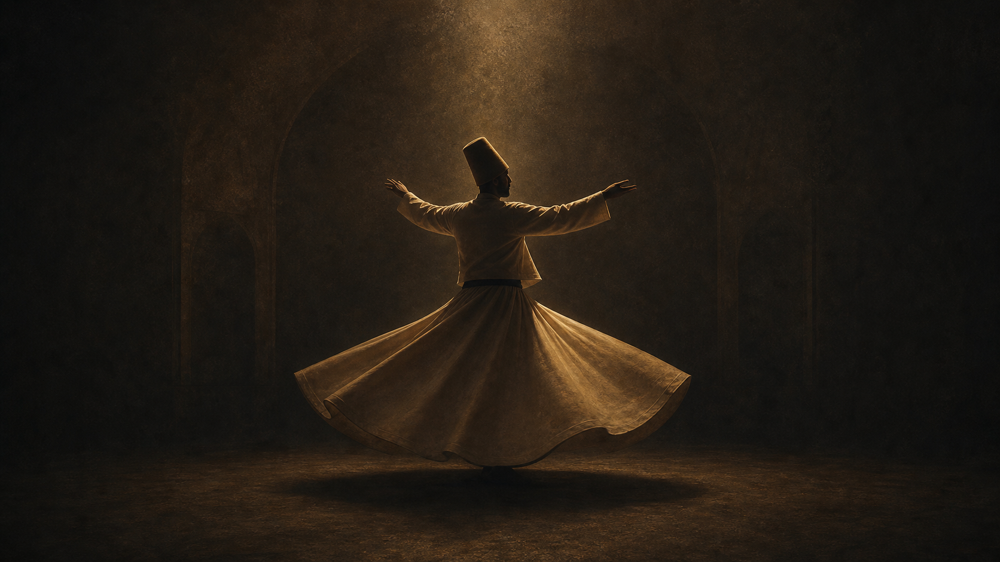

Masnavi 选段 · 原型示例

华人世界第一个「鲁米诗歌研修平台」
你寻找的，
正在寻找你。
每一首诗，都是一扇回家的门。
Daily Poem
今日一诗
不是收藏诗句，而是学习怎样进入诗。
Rumi World
鲁米百科
不是人物简介，而是可持续扩展的知识体系。
鲁米是谁？
一生时间线、家族、老师、学生、弟子、流派与影响。
沙姆士是谁？
相遇、转变、消失与学术观点，解释鲁米生命中的断裂点。
梅夫拉维教团
旋转舞、音乐、仪式、服装，以及每个动作的象征意义。
苏菲主义
Dhikr、Fana、Baqa、Tawhid、Love、Heart 等核心概念。
伊斯兰背景
Quran、Hadith、Sharia、Tariqa、Haqiqa、Marifa 的关系。
误读索引
区分原文、译文、转述和现代再创作，减少浪漫化误读。
Thematic Study
按主题学习
网站的核心不是搜索诗句，而是沿着主题长期阅读。
Deep Reading
五层解析
每首诗都从文本进入生命经验，而不是停在“好美”。
字面意思
先弄清楚诗在说什么，避免凭感觉跳读。
文学修辞
观察比喻、重复、转折、召唤和悖论。
苏菲象征
理解酒、火、恋人、朋友、门、镜子等传统语汇。
心理学解释
用荣格视角阅读阴影、破碎、整合与个体化。
现代生活
把诗带回失恋、工作、关系、孤独和日常选择。
Rumi Academy
鲁米学院
像课程一样循序渐进，像修习一样每天回来。
学习节奏
每日 20 分钟
一段文本、一条注释、一个问题，把阅读变成稳定的生命练习。
课程结构
文本 · 历史 · 象征 · 实践
每一级都包含讲义、原文线索、导读音频、书写题和结课作品。
完成方式
读懂一首，带走一法
不以知识堆积为目标，而是形成可复用的读诗、观心与带领能力。
Rumi Path
诗歌修习
每天一首诗、一个问题、一次书写、一次静坐、一个行动。
今日问题
你最害怕失去什么？
365 天路径
1读一首诗
2回答一个问题
3静坐五分钟
4完成一个行动
5七天后回看
Library & Map
鲁米书房与地图
把文本、地点和时间线连起来，形成可探索的知识图谱。
点击地点查看时间线节点。
推荐书架
- Masnavi核心文本，适合深度精读。
- Divan-e Shams进入鲁米燃烧性的抒情诗。
- Fihi Ma Fihi理解鲁米谈话与教学方式。
- 研究论文按入门、进阶、学术排序。
Quote Graph
鲁米语录知识图谱
每一句语录都回到出处、上下文、误译说明与延伸阅读。
你寻找的，正在寻找你。
- 出处
- 标注原文、译文或现代转述状态。
- 上下文
- 说明这句话在鲁米思想中如何指向渴望与回归。
- 误译说明
- 区分诗意表达、英文改写与可核查文本。
- 延伸
- 相关文章、音频、视频、诗歌与修习问题。
Chinese Context
华人特色
比较不是简单等同，而是在文本、历史与思想背景中互相照亮。
鲁米
中国思想
研修问题
爱即道路
仁者爱人
爱是情感，还是一种修行能力？
回家
返本开新
所谓家，是过去，还是更真实的自己？
空杯
虚而待物
什么必须被清空，新的理解才会进入？
镜子
明镜台与禅宗意象
心是被擦亮，还是本来明净？
无我
忘我、无执
放下自我，是否等于取消个人？